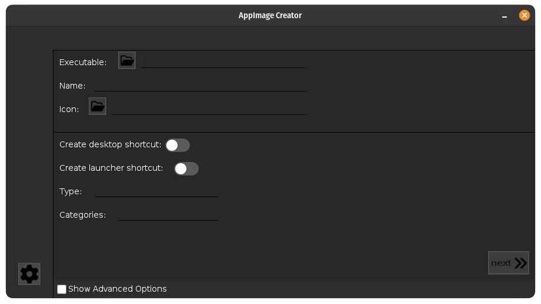
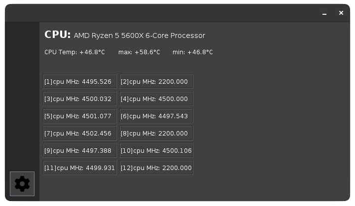

SalaniLeo's projects
AppImage Creator
AppImageCreator is an app made exclusively to act as an interface for AppImage Builder, you can find it on GitHub by clicking the link below. Currently is not being updated becauso of lack of time. i'm also slowly redoing the app in pygobject to fit in the gnome shell even better. The link to the pygocject version this .
Java
Basic CPU Properties
Basic CPU Properties is used to see the use and mhz of the cpu, you can also see the temperature and you can change the refresh rate of the data
Java
NasWebInterface
This is still in early development so i wont post any screenshot, but you can find it on my GitHub Page
This website is made to remotely control and view files, view per-disks utilization, cpu usage, ram usage, and can also be used as main page when opening your browser since it has a google search bar, wheather square to view the weather of you city. I hope to finish this project before the start of 2023, but with school im not sure i can do it.
html, Javascript, css